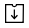

Document Menus¶
Documents¶
Documents are stored in the following three menus according to the document status:
In progress: View the list of documents you have created or signed/approved that are incomplete.
Action required: View the list of documents you have saved as a draft, requested by other members for you to sign or approve, or sent to external recipients but have yet to be signed.
Completed: View the list of completed documents among the documents created by you.
By using these menus, you can easily view the status and history of each document, find the documents you want by filtering and searching, resend documents, void/reject documents that have yet to be completed in the workflow, and edit draft documents.
All documents and related activities are stored in the Documents menus, and you can view detailed information about the document status and history.
Aside from the three document menus, there is another menu for managing documents.
Manage documents: View and manage all documents created from a template in which you have been given access permission.
Note
The company administrator can view and manage all documents in the company.
{kind=link}
Note
The layout of the Documents menus are very similar to each other, but the documents that are displayed differ according to the document status or granted permission to users.

Documents menu¶
Each documents menu consists of the following five sections:
Menu and home icon, and document menu name
You can go to another menu by clicking the menu icon (
 ) or go to the dashboard by clicking the home icon (
) or go to the dashboard by clicking the home icon ( ). You can also see the name of the documents menu you are currently viewing.
). You can also see the name of the documents menu you are currently viewing.Template category combo box, document status filter combo box, and search box
You can view documents by the selected template category and filter documents by document status.
In addition to performing searches using keywords, you can also use advanced methods such as searching by name + contents, document ID, date, and many more.
Document list and actions
Up to 20 documents are listed per page and you can view the documents in other pages by clicking the page numbers at the bottom.
The information of each document such as the document status, name, step, creator, created date, and document number is provided in columns in the document list. You can also change the column information displayed. Click the column icon () displayed at the top right corner of the page, and then check the columns you want to display in the column check box.
You can also perform actions on a document such as reviewing, previewing, correcting, voiding, resending, and deleting a document.
Document status and history
You can check the documents status and history.
In the Document status tab, you can see what happens to a document in each step of the workflow.
In the History tab, you can see the activities of the document creator and recipients from document creation to completion.
The column selection icon, document download icon, and delete icon
Clicking the column selection icon () displays the column types which you can check to select which columns will be displayed in the document list.
Clicking the download icon () allows to select the documents in the list you want to download. You can select multiple documents to download at once and choose the file type including the PDF of the completed documents, audit certificate, and CSV of selected fields.
Note that the delete icon (
 ) is disabled in the three document menus, but is enabled in the Manage documents menu.
) is disabled in the three document menus, but is enabled in the Manage documents menu.Note
How to delete documents
Documents can be deleted only in the Manage documents menu and you can only delete documents in which you have document manager permission. The company administrator or the template managers of a template can grant you document manager permission for all documents created from a template in Manage templates > Template settings > Set permissions > Document management and selecting the groups/members you want to grant permission. Document manager permission can be set for each template. Members with this permission can open, delete, and download the documents (PDF, CSV) created from this template in the Manage documents menu.
{kind=link}
{kind=link}
Template Category Combo Box, Document Status Filter Combo Box, and Search Box¶
The template category combo box, document status filter combo box, and search box are located at the top left side of the Documents menus and the Manage documents menu.
‘In progress’, ‘Action required’, and ‘Completed’ menus
In these menus, the template category combo box, document status filter combo box, and search box are also located at the top left side of the screen.
Manage documents
In this menu, the template category combo box, document status filter combo box, and search box are located at the top left side of the screen. However, the document status filter combo box contains one additional menu, ‘Voided’, compared to the three documents menus.
Template category combo box
By using the template category combo box, you can display the list of documents by template category by selecting the desired template available in the Manage templates menu.
Clicking the X icon of the template category combo displays the templates according to categories as shown below:

Searching by document status¶
You can search for documents by document status in each document menu.
Action required

In progress
{kind=link}
Completed

Manage documents
{kind=link}
Document status filter combo box¶
In addition to doing searches using keywords, you can also use advanced methods such as searching by name + contents, document ID, date, and filtering by document status.
You can also search for field values in documents in detail by using a custom filter. As well, by using a custom filter, you can search for documents according to the range of numbers and dates.
The following table describes the filters that can be used for performing searches. However, custom filters can only be used in the Manage documents and Completed menus.
Action required |
In progress |
Completed |
Manage documents |
|---|---|---|---|
Name + contents |
Name + contents |
Name + contents |
Name + contents |
Name |
Name |
Name |
Name |
Contents |
Contents |
Contents |
Contents |
Document ID |
Document ID |
Document ID |
Document ID |
Document number |
Document number |
Document number |
Document number |
Template name |
Template name |
Step |
Step |
Step |
Step |
Created by |
Created by |
Created by |
Created by |
Created on |
Created on |
Created on |
Created on |
Recipient |
Recipient |
Requested by |
Days passed |
Custom filter |
Custom filter |
Requested on |
Recipient |
||
Recipient |
Using the custom filter¶
Select Custom Filter in the Advanced search combo box.

Select the field name, field type (keyword, range, or period), and search value.
The default value of the field name is an empty value.
Make sure to manually enter the Display name of the field in the document you want to search for. You can view the Display name for fields in the Template settings > Field setting menu.
Note
Documents may not be searched if you search for a document by entering the display name of the field that does not exist.
You cannot enter special characters in the display name (“, ‘, ;, <, >, \).
Empty spaces before and after the display name are all removed. E.g. “Time off ” -> “Time off”.
When adding or editing a search value, if you enter a duplicate value in the custom filter, then the previously entered field typeand field search value will be displayed. For example, when adding a custom filter again while ‘years worked: 5~10’ was entered in the custom filter, if you enter ‘years worked’ in the field name, then the previous value such as Range for Type, 5 for Min value, and 10 for Max value are displayed.
You can choose one of Keyword, Range, and Period for the field type. Keyword is the default.
Note that the input boxes displayed differ according to the field type selected.
Field type |
Input box 1 |
Input box 2 |
|---|---|---|
Keyword |
Text |
|
Range |
Min |
Max |
Period |
Start date |
End date |
Keyword
Used for searching multiple values by a comma (,) which is used as the delimeter. The default value is empty.
When used, it searches for the text entered. In other words, it searches for documents that contain at least one of the multiple values entered. E.g. Field name: fruit / Field type: keyword / Value1: strawberries, apple → searches for documents that contain at least one of ‘strawberries’ and/or ‘ apple’.
Range
Used for searching values of range such as numbers or dates. E.g. number: 100 ~ 200, period: 01/01/2019 ~ 06/30/2019
When used, it searches for values between the min and max. If you only enter the min, then only the values larger than the min value are searched, while if you only enter the max then only the values smaller than the max are searched. E.g. salary: 1000 ~ , salary: ~ 5000
Period
Selects the period in the calendar displayed. The default value of the period length is set to one week.
Searches for the date between the start and end date selected.
Click the add search (
 ) button to add the keyword entered and documents are searched according to the conditions set.
) button to add the keyword entered and documents are searched according to the conditions set.
Note
You can add multiple custom filters, and can modify/delete the custom filters you added.
You cannot add multiple custom filters with duplicate field names.
If you modify a predefined custom filter, then the field type and search values are updated with the most recently entered values.
Displaying search keywords and modifying/deleting them¶
The search keyword is added in the form of field name: value.
Keyword: “employment type: permanent, contract”
Range: “years worked: 5~10”
Period “contractperiod_yymmdd: 2018-01-01~2018-12-31”
Modify the custom filter by selecting a search keyword added. When modifying, the Advanced filter item is changed to Customer filter, and the selected filter’s field name, field type, and search value are displayed.
Added keywords can be deleted by clicking the X icon on the right.
Document Status and History¶
If you select a document in the document list, you can view the status and history of that document on the right side of the screen.
In the Document status tab, you can see when and what happens to a document in each step of the workflow. In the History tab, you can see the activities of the document creator and recipients from document creation to completion.
{kind=link}

Document Download¶
Documents created in eformsign can be safely stored for long periods of time.
All documents are stored in a file format for long-term storage (PDF/A) and only members with document manager permission can open and delete them.
Click the download icon (
 ) on the right side of the document list.
) on the right side of the document list.Select the document to be downloaded, and then click the Download button.
{kind=link}
Note
CSV files can also be downloaded in the Download pop-up where PDF files can be downloaded. Select CSV download in the pop-up and check the fields (columns) to be downloaded and then click the Download button.
Permanently Removing Documents¶
In eformsign, only members with document manager permission can permanently remove documents.
Click the remove icon (
) on the right side of the document list.Select the document and then click the Remove button.
Click the Yes button in the Remove pop-up window to permanently remove the document.
Document Menu Column Selection¶
If you click the column () icon on the right side of the document list, you can select which column to be displayed on the list.

Drafts¶
The Drafts inbox stores the documents in the New from my file step that have been saved by clicking Save as a draft before sending the document. You can open the files stored in the Drafts menu anytime and proceed or delete.
Click Drafts in the sidebar menu to go to the Drafts page.

Select a document you want and click the Continue button next to it.
Edit the document in the Create from my file screen and send it.
{kind=link}
Note
For more information about creating a new document from my file, please refer to New from my file.
Bulk send¶
In the Bulk send inbox, you can see all the documents sent in bulk. You can check the status of documents sent in bulk, cancel or change the date & time of scheduled sends, or resend bulk-sent documents.
In the list of bulk sent documents, click Detail view to see the detailed information of the documents such as response status, the step in the workflow of the sent document, etc.
Check the response status of bulk-sent documents
Resend documents in bulk or individually
Void documents (excluding completed ones)
Download PDF or/and CSV files
View the current document step, document status, and history of each document

Tip
When you are resending documents in bulk, you cannot change the recipients’ contact information. The documents will be sent to the contact information that you entered previously. It you want to change the contact information, resend documents seperately.
For documents scheduled to be sent later, you can change or cancel the scheduled send.

Note
For more information about sending documents in bulk, please refer to Send in bulk.
Shared¶
In the Shared inbox, you can share your documents with other members by creating shared folders and also access the documents other members shared with you.

A member can create a shared folder and choose the members and groups that can access the folder.
If you have a document you want to added a shared folder, you can go to the Action required, In progress, or Completed inbox and add the document to a shared folder.
Creating a shared folder
Click Shared in the sidebar menu.
Click the Add shared folder button to create a shared folder.
Enter the folder name and description in the pop-up window displayed and select the members/groups you want to grant access permission.
Click the see more (⋯) button next to the shared folder you created to configure its settings.

General settings: Sets the folder name, description, and access permission.
- Set auto-sharing rule: Sets the rules for auto-sharing documents in the shared folder.
If you select the document type and words included in the document title, documents will be automatically shared in the shared folder according to the rule.
For example, if you add the word “contract” in Words included in the document title and select documents created without a template in Document type, documents containing the word “contract” in the document title that were created without a template are shared in the shared folder.
Change owner: Changes the owner of the shared folder.
Note
❗A member who creates a shared folder automatically becomes the owner of the shared folder.
Delete: Deletes a shared folder. If a shared folder is deleted, all documents shared in the shared folder are unshared.
Tip
Tip. How to set the auto-sharing rule.
Click the see more (⋯) button next to the desired shared folder and click the Set auto-sharing rule option.
Set the rule for auto-sharing documents in the pop-up displayed. Adding words under Words included in the document title automatically adds the documents containing the words in the document title. Selecting a template under Document type automatically adds the documents created from the template in the shared folder.
Words included in the document title: If you add a word, documents containing that word in the document title are automatically shared in the shared document. You can add multiple words, and if a document contains any one of the words, it is shared in the shared folder.
Document type: If you select a template in the template list, when a document containing any of the words in Words included in the document title is created from that template, the document is automatically shared in the shared folder. If you select “Documents created without a template” in the template list, when a document containing any of the words in Words included in the document title is created from New from my file, the document is automatically shared in the shared folder.

Adding a document in a shared folder
Go to a document inbox (Action required, In progress, or Completed).
Click “Shared” under a document name to add a document to a shared folder of your choice.
Tip
To share multiple documents at the same time, click the share icon at the top right corner of the screen. Then, select the documents you want to share and click the Share button at the top of the screen.